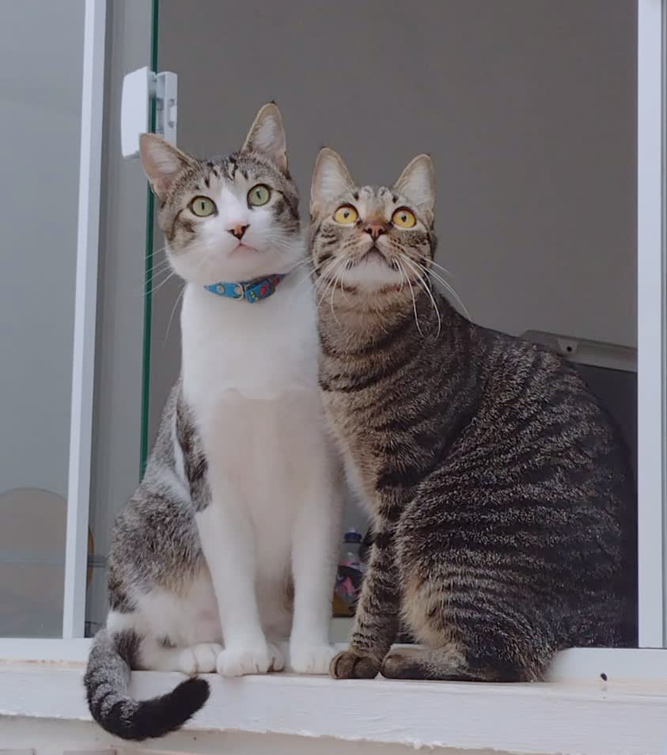

Kernfakten
- Katzen sind obligate Karnivoren und auf eine passende Taurinversorgung angewiesen.
- Hunde und Katzen haben unterschiedliche Ernährungsphysiologie.
- Futterumstellungen gehören bei Krankheit oder Spezialdiät tierärztlich begleitet.
Wer vegan lebt, kann das für sich entscheiden. Beim Tier entscheidet aber zuerst der Stoffwechsel des Tieres.

Hunde und Katzen leben beide mit Menschen, aber sie sind ernährungsphysiologisch nicht dasselbe Tier. Hunde können Nährstoffe aus unterschiedlichen Quellen nutzen und sind in der Praxis flexibler. Katzen sind stärker auf Nährstoffe angewiesen, die in Beutetieren natürlicherweise vorkommen oder im Futter zuverlässig ergänzt werden müssen.
Das heißt nicht: „Katzen brauchen Romantik vom rohen Fleisch.“ Es heißt: Katzen brauchen ein vollständiges, katzengerechtes Nährstoffprofil. Wenn das nicht stimmt, können Herz, Augen, Immunsystem, Fortpflanzung und Stoffwechsel leiden.
Appetit beweist nicht, dass alle essenziellen Nährstoffe stimmen.
Entscheidend ist nicht die Ideologie auf der Packung, sondern die bedarfsgerechte Zusammensetzung.
Taurin ist eine schwefelhaltige Verbindung, die bei Katzen besonders wichtig ist. Es spielt unter anderem eine Rolle für Herzfunktion, Netzhaut, Gallensäuren, Fortpflanzung und Entwicklung. Katzen können Taurin nicht in ausreichender Menge selbst bilden. Deshalb muss es zuverlässig über die Nahrung kommen.
In der Natur kommt Taurin vor allem in tierischem Gewebe vor, besonders in Beutetieren, Muskelfleisch und Herzgewebe. In fertigem Katzenfutter wird Taurin häufig zugesetzt, weil natürliche Gehalte schwanken und Verarbeitung, Lagerung und Rezeptur Sicherheitsmargen brauchen. Zusatz ist hier kein Zeichen von schlechtem Futter, sondern oft Teil einer kontrollierten Versorgung.
Bei Hunden ist eine pflanzliche beziehungsweise vegane Ernährung nicht automatisch unmöglich. Aber sie ist kein Küchenexperiment. Sie muss vollständig bilanziert sein: Aminosäuren, Fettsäuren, Vitamine, Mineralstoffe, Energie, Verdaulichkeit und individuelle Gesundheit müssen passen. Wer das ernsthaft tun will, braucht ein vollständiges Alleinfutter oder tierärztliche Ernährungsberatung und regelmäßige Kontrolle.
Bei Katzen ist die Schwelle deutlich höher. Eine Katze vegan zu ernähren heißt nicht einfach Fleisch wegzulassen. Es müsste jedes kritische Nährstoffprofil zuverlässig ergänzt und dauerhaft kontrolliert werden. Schon kleine Fehler können schleichend Schaden anrichten. Für diese Seite gilt deshalb als klare Grundlinie: Eine Katze wird nicht aus menschlicher Weltanschauung zum Versuch gemacht.
| Frage | Warum es problematisch ist |
|---|---|
| Katze bekommt dauerhaft Hundefutter | Risiko für Mangel an Taurin und anderen katzenspezifischen Nährstoffen. Hundefutter ist nicht auf obligate Karnivoren ausgelegt. |
| Hund bekommt dauerhaft Katzenfutter | Oft zu energiereich, protein- und fettreich. Das kann Gewicht, Verdauung und bei empfindlichen Hunden Erkrankungen belasten. |
| Mal aus dem Napf naschen | Einmaliges Probieren ist etwas anderes als Dauerernährung. Dauerhaft zählt das vollständige passende Futter. |
Tierliebe heißt hier: Erst Nährstoffbedarf, dann Weltanschauung. Nicht andersherum.
Wa(h)re Haustier(liebe) ist ein privates Projekt – werbefrei, unabhängig und ehrenamtlich. Die laufenden Kosten für Hosting, Domain und Recherche tragen wir selbst. Wenn dir diese Seite geholfen hat, freuen wir uns über Unterstützung – für uns oder direkt für den Tierschutz:
Spenden an uns als Privatpersonen sind nicht steuerlich absetzbar. Die Streunerhilfe Plau e. V. ist ein eigenständiger gemeinnütziger Verein – dort ist deine Spende steuerlich absetzbar und fließt direkt in die Versorgung und Kastration von Streunerkatzen.